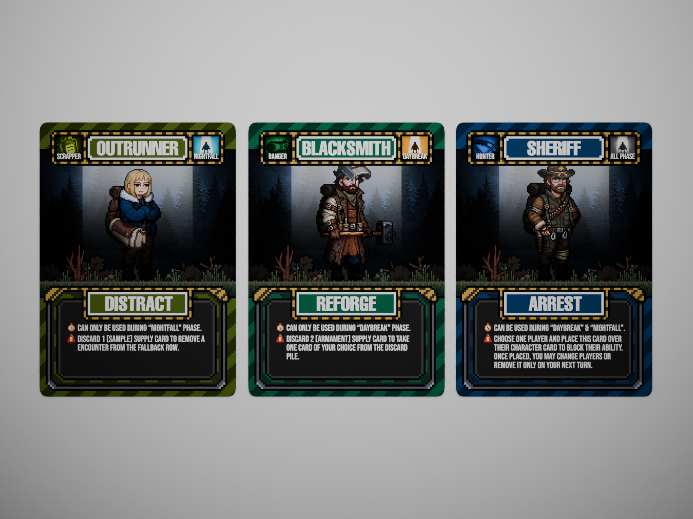
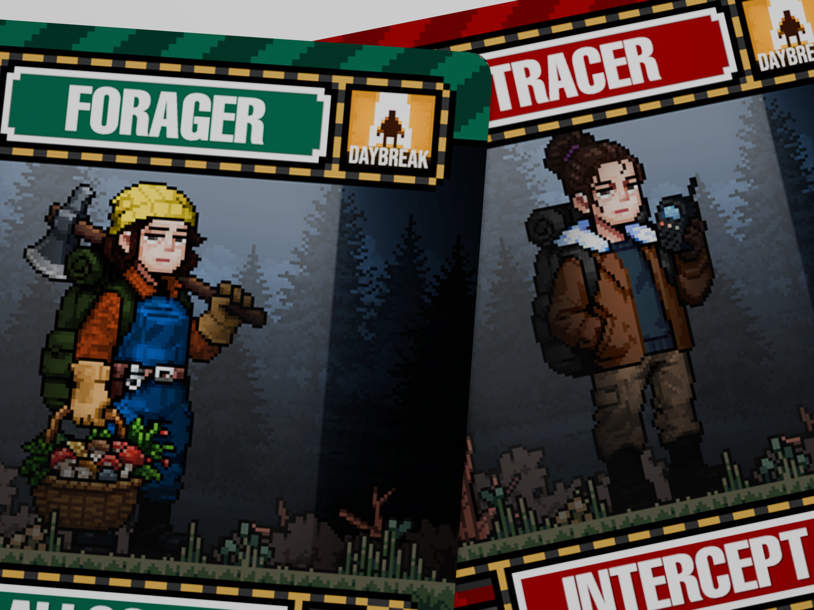
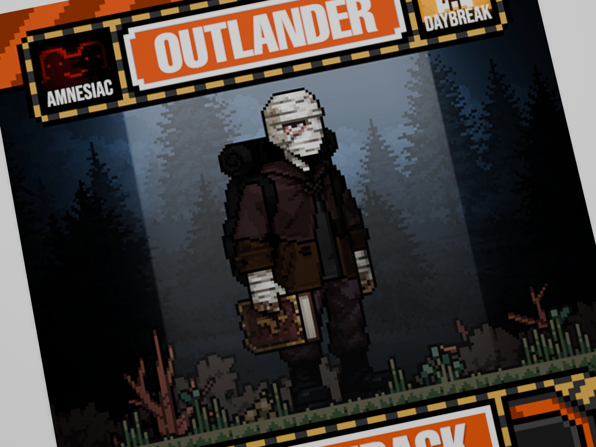
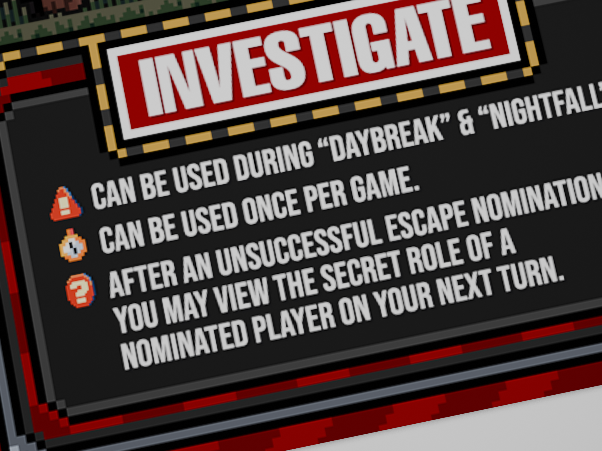
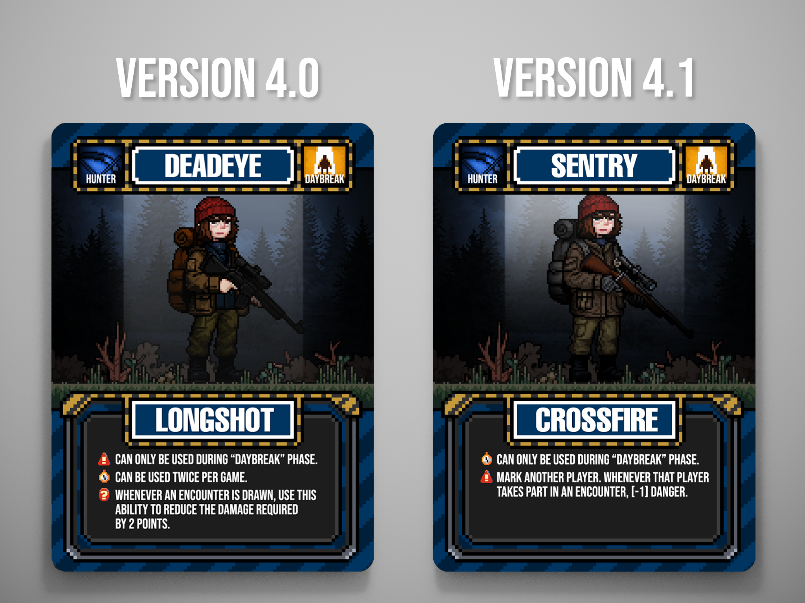

Back in Too Many Characters, we admitted the roster had grown past the point of being fun. Forty characters, eight classes, and half of them doing the same job with a different coat of paint. We said we'd cut it down and make every character earn its spot. That work is what became 4.1, and this is what actually changed.

Before the mechanics changed, the cards themselves needed fixing. Three problems kept coming up in playtests and reviews of the old set.



Cost and timing, not a counter
That last problem turned out to be the whole design. Old cards carried three lines: phase, usage limit, effect. The usage limit was doing nothing but bookkeeping, so 4.1 cuts it entirely. New cards read as two lines: phase, effect. Instead of a counter, every ability is now gated by something a player actually has to weigh in the moment:
- a typed supply card to spend, whether MEDICAL, ARMAMENT, or SAMPLE
- a phase lock, restricting when the ability can even be used
- a drawback written directly into the ability's effect
- a condition the player doesn't fully control
Every one of those is a decision made at the table, not a running total on a card. That single change is what the rest of the rework builds on.
One job per faction
With abilities free of their counters, we went back through all eighteen and asked what each one actually does mechanically, not what its flavor text implied. Five factions already had a clean, single job. Outlaw was the outlier, holding three characters that didn't share a purpose. Three moves fixed it.
| Move | Reason |
|---|---|
| Sheriff moved to Outlaw, renamed Warden | Joins Stranger and Trickster as player interference |
| Prospector moved to Ranger | Gold Rush is a draw engine — pure supply economy |
| Survivalist moved to Hunter | The only Ranger with a combat trigger |
The Survivalist move was the one that unlocked everything else. Our first plan was to move Disruptor into Hunter instead, and every ability we wrote for her afterward fought that placement. She was never the problem. Survivalist was.
| Faction | Members | Job |
|---|---|---|
| Detective | Enforcer, Informant, Inspector | Indirect intel |
| Scientist | Geneticist, Virologist | Direct intel |
| Amnesiac | Outlander | Direct intel, self-blind |
| Hunter | Sentry, Duelist, Survivalist | Encounter combat |
| Ranger | Blacksmith, Forager, Prospector | Discard economy |
| Scrapper | Pathfinder, Surveyor, Disruptor | Encounter deck control |
| Outlaw | Stranger, Trickster, Warden | Player interference |
Eighteen characters, seven factions, one job each. No two characters compete for the same reason to exist.
Mark: one gesture, four consequences

Four cards now share a single physical gesture: placing your character card onto another player's. We call it Mark.
Mark: place your character card onto another player's character card. It stays there until, on your turn, you move it to another player or take it back.
Same gesture, one different consequence per faction that uses it:
| Card | Faction | Ability |
|---|---|---|
| Warden | Outlaw | Arrest — their ability is blocked |
| Enforcer | Detective | Investigate — look at their hand before they contribute to an encounter |
| Surveyor | Scrapper | Overwatch — look at the top 2 cards and choose which one they draw |
| Sentry | Hunter | Crossfire — [-1] danger whenever you and that player share an encounter |

All four Marks persist until moved. None of them resolve on their own, and a player only ever has one to place, so leaving it on someone means you're not watching anyone else. Physically seeing whose card sits where turns out to generate more table argument than any hidden effect ever did.
The renames
A few characters needed new names once their jobs changed. Warden was chosen over keeping Sheriff, since a lawman inside the Outlaw faction was a word collision, a warden isn't the law, he's just the one holding the keys. Sentry replaced Deadeye once Longshot became Crossfire. Outrunner became Disruptor, whose job is now removing a bad encounter outright instead of just running from it. And Tracer is on deck to become Informant, once her card art carries the new name.
Not everything is settled. Whether Fallback needs a reason to exist, how Trickster's card-swap interacts with a Mark already in play, and whether an unwritten "once per turn" rule is needed now that counters are gone are all still open questions we're carrying into playtest. But the direction is clear: fewer excuses for a character to feel redundant, and every remaining one earning its spot at the table.